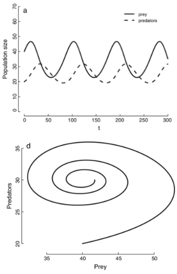
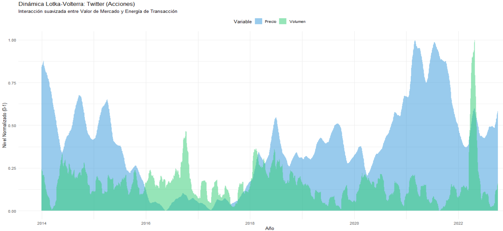
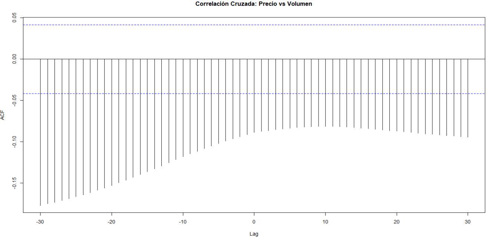
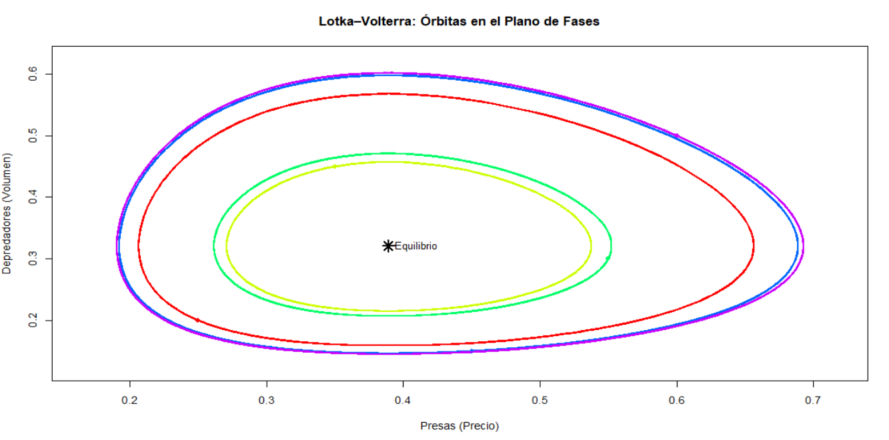

Proyecto para el curso de Cálculo III, ecuaciones diferenciales y sistemas dinámicos
Este proyecto utiliza el modelo matemático de Lotka-Volterra que describe la interacción entre depredadores y presas para analizar la dinámica financiera de la acción de Twitter. En lugar de especies biológicas, el modelo analiza la relación entre el Precio (Presa) y el Volumen de transacciones (Depredador), demostrando que los mercados financieros operan con ciclos de retroalimentación y límites de recursos.
Este modelo en su forma clásica contiene dos variables que son:
\( x(t): \) es el tamaño de los precios
\( y(t): \) es el tamaño del volumen de transacciones
Y cuatro parámetros:
\(\alpha\) que es la tasa de crecimiento intrínseco de los precios (sin transacciones).
\(\beta\) que es la tasa de decrecimiento de los precios por encuentro con volumen de transacciones
\(\gamma\) que es la tasa de crecimiento del volumen de transacciones por interactuar con los precios
\(\delta\) que es la tasa de decrecimiento intrínseca del volumen de transacciones (sin precios).
Con esto se forma el siguiente sistema de ecuaciones diferenciales:
$$ \frac{dx}{dt} = \alpha x - \beta x y $$
$$ \frac{dy}{dt} = \delta x y - \gamma y $$
Para los precios \(\frac{\partial x}{\partial t}\), tenemos que:
\(\alpha x\) es el crecimiento exponencial de los precios
\(-\beta x y\) es el decrecimiento debido a la interaccion del precio con el volumen de transacciones.
Para el volumen de transacciones \(\frac{\partial y}{\partial t}\) tenemos que:
\(\gamma x y\) es el crecimiento del volumen de transacciones por interactuar con los precios.
\(- \delta y\) es el decrecimiento natural del volumen de transacciones (en ausencia de precios).
Un elemento importante en este modelo son los puntos de equilibrio, en estos puntos ocurre que el sistema se encuentra en equilibrio y las poblaciones tanto de precios como de volumen de transacciones son constantes.
El primero de estos puntos es el $(0, 0)$, en este punto no hay precio ni volumen de transacciones, dado que no hay operaciones el sistema se mantiene siempre estatico en este punto.
El otro de estos puntos es \( \left(\frac{\delta}{\gamma}, \frac{\alpha}{\beta} \right) = (x*, y*) \)
\(x* = \frac{\delta}{\gamma} \), la cantidad de precio en equilibrio es proporcional a la tasa de decrecimiento del volumen de transacciones \( (\delta) \) e inversamente proporcional a su eficiencia de conversión \( (\gamma) \). Si el volumen de transacciones decrece rápido \( ( \delta \ \ grande ) \) , se necesitan más precios para mantenerlos. Si el volumen de transacciones es muy eficiente \( (\gamma \ \ grande) \) , se necesitan menos precios.
\( y* = \frac{\alpha}{\beta} \), el volumen de transacciones en equilibrio es proporcional a la tasa de crecimiento del precio \( (\alpha) \) e inversamente proporcional a su tasa de captura \( (\beta) \). Si los precios aumentan rápido \( (\alpha \ \ grande) \) pueden sostener más volumen de transacciones. Si el volumen de transacciones es muy efectivos \( (\beta) \) habrá menos volumen de transacciones (porque bajan mucho los precios).
Cualquier otro puntos que no sea alguno de estos hace que el sistema sea inestable y no constante, ademas es importante mencionar que el modelo de Lotka-Volterra tiene una estabilidad no lineal, el centro es inestable porque cualquier pequeña perturbación en el modelo cambia radicalmente el comportamiento, cuando se llega a un punto de equilibrio, hay un comportamiento de orbita, pero las órbitas son cíclicas y no asintóticas, no se acercan ni alejan del equilibrio, solo giran alrededor.
Uno de los gráficos que obtenemos con este modelo es el siguiente

Este es el grafico teórico que se obtiene en un modelo de Lotka-Volterra, el gráfico de arriba muestra la interacción entre depredadores y presas, y el grafico de abajo es la orbita con respecto al punto de equilibrio y muestra la estabilidad del sistema
Calculamos la tasa de crecimiento con la siguiente formula, primero definimos el precio en un momento de tiempo t, denominado \( P_t \)
Si definimos \( P_t \) como el precio (o población) en el tiempo t, y \( P_{t-1} \) como el precio en el periodo de tiempo anterior, la fórmula para el crecimiento nos queda: \( \frac{P_t - P_{t-1}}{P_{t-1}} \)
Mide el cambio porcentual directo respecto al día anterior, por ejemplo el precio crecio un \( x\% \). Basicamente esta tasa de crecimiento aritmética sirve para representar las variaciones porcentuales diarias de la acción y el volumen, sirviendo como aproximación discreta de las derivadas en las ecuaciones de Lotka-Volterra.
Proyecto para el curso de Cálculo III, ecuaciones diferenciales y sistemas dinámicos En nuestro caso implementamos codigo para obtener el punto de equilibrio, el cual resulto ser (0.3890509, 0.3208804)
En cuanto al grafico de la interaccion entre el volumen de transacciones y los precios obtuvimos lo siguiente:
 Luego para el grafico de orbita obtuvimos lo siguiente
 Podemos observar un grafico llamado autocorrelograma que nos sirve para ver
 El grafico de arriba lo que representa es la dinamica entre el volumen de transacciones (depredadores) y los precios (presas), vemos que cuando el la cantidad de
precios empiezan a aumentar el volumen deImplementacion codigo